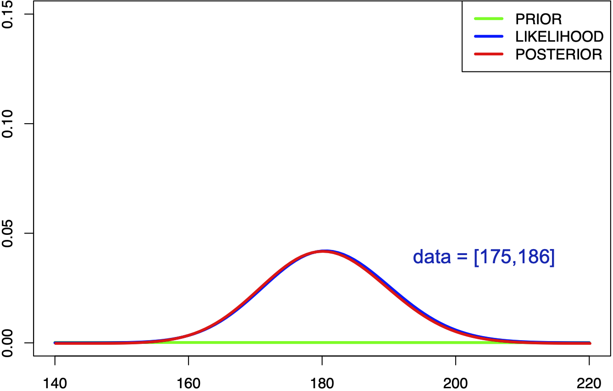
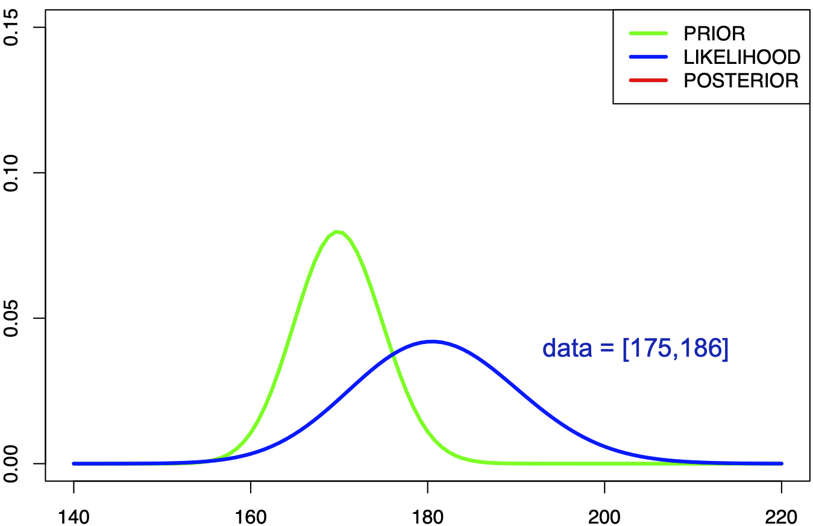
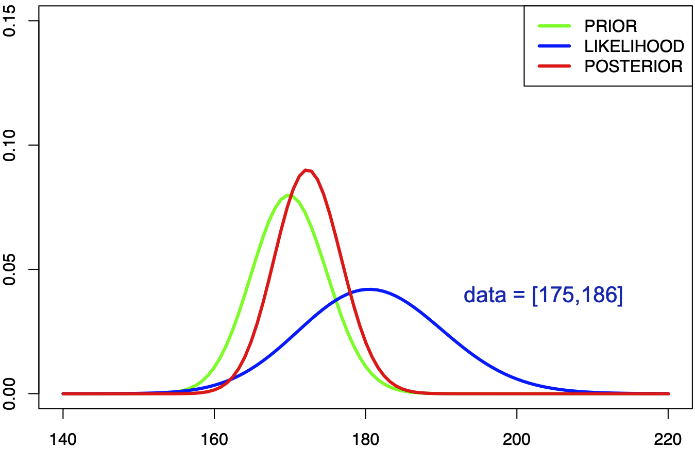
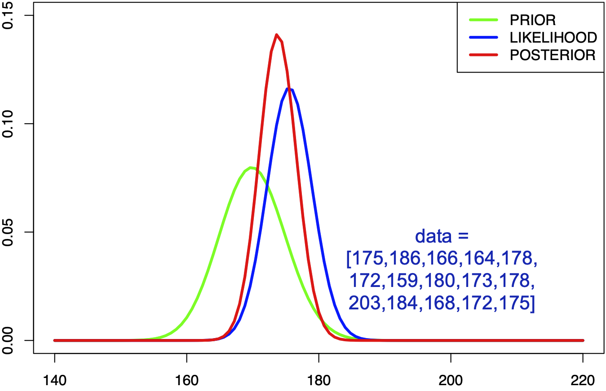
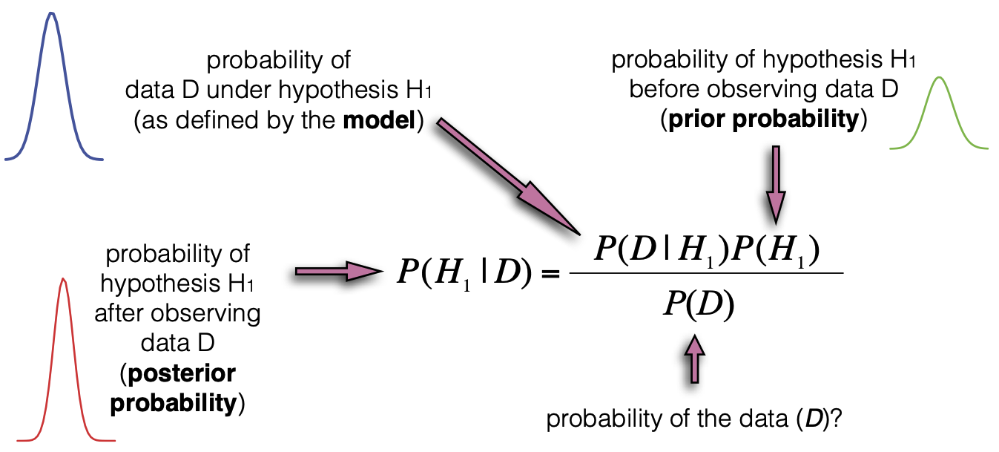
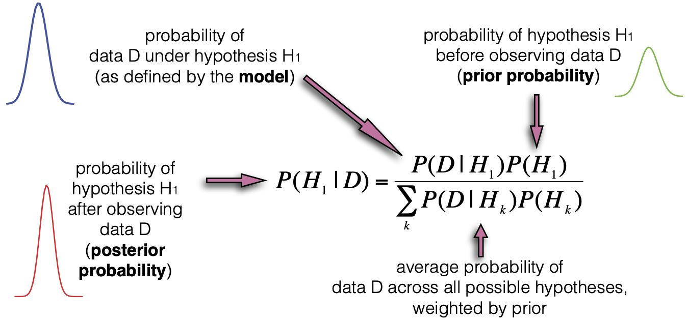
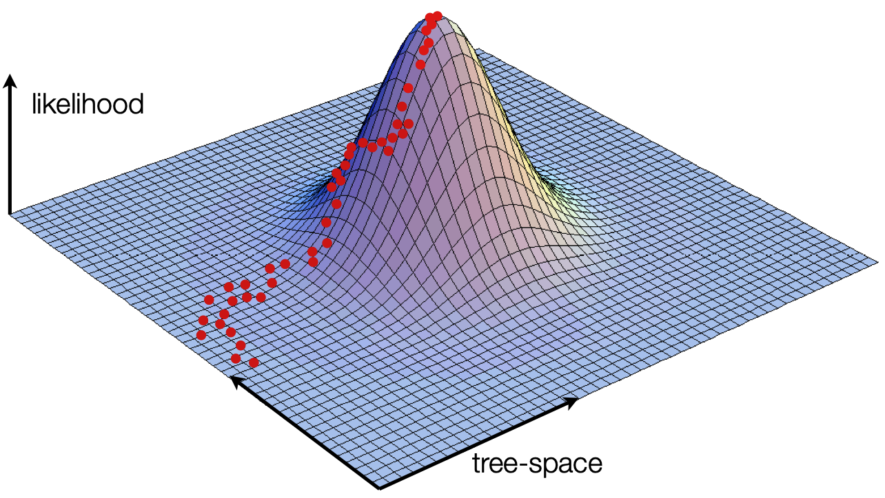
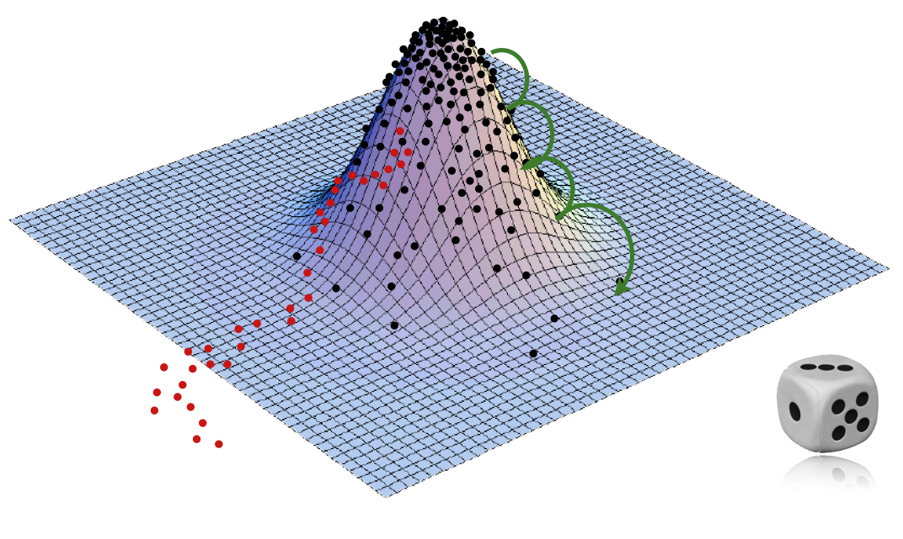
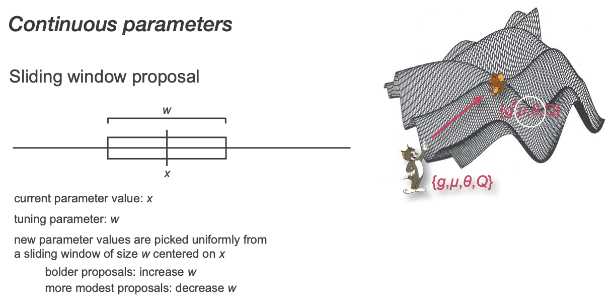
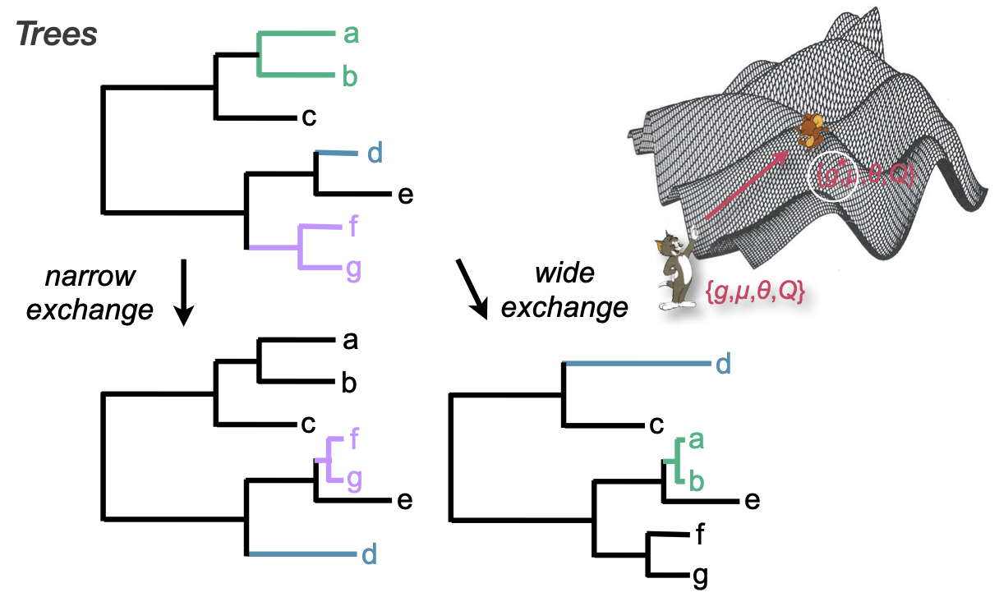

Bayesian Phylogenetics and Markov chain Monte Carlo
Barney Isaksen Potter
KU Leuven
2024-10-09
Rega Institute, Dept. of Microbiology and Immunology
One Tree to rule them all, One Tree to find them, One Tree to bring them all and in the darkness bind them
The (maximum likelihood) method's we've learned so far try to get a single tree
The one they find is likely not the "best"
Are we doing a good job of reporting a single tree?
Frequentist statistical framework
Probabilities refer to the outcome of experiments (i.e. data)
Probabilities are objectively real in the same way that physical objects are real
"Likelihood" referes to the degree to which data support a hypothesis
Bayesian statistical framework
BOTH data and model parameters are described by probabilities
Probability represents the degree to which we believe a hypothesis
Hypotheses can have probabilities in the absence of data
Fundamentals of Bayesian inference
Bayesian inference produces a posterior probability distribution instead of a single MLE
The posterior combines information from both data and prior knowledge
Each parameter in the model has a prior probability distribution representing known knowledge about that parameter
Example: weak prior

"Human heights follow a uniform (flat) distribution between 1 angstrom and the width of the universe."
Example: informative prior

"Human heights follow a normal distribution with mean 170cm and standard deviation 5cm."
Example: informative prior

"Human heights follow a normal distribution with mean 170cm and standard deviation 5cm."
Example: informative prior

"Human heights follow a normal distribution with mean 170cm and standard deviation 5cm."
Bayes' Theorem
\[
P(H_1|\textbf{D}) = \frac{P(\textbf{D} |H_1) \times P(H_1 )}{P(\textbf{D})}
\]
How can observing data (D ) change our belief in a hypothesis (H1 )?

How can observing data (D ) change our belief in a hypothesis (H1 )?

How can we apply this model to phylogenetic inference?
\[
P(H_1|\textbf{D}) = \frac{P(\textbf{D} |H_1) \times P(H_1 )}{P(\textbf{D})}
\]
The posterior probability of a phylogenetic tree, $\tau$:
$\tau = $ phylogenetic hyopthesis (tree)
$\textbf{X} =$ genomic sequence data
Likelihood calculation
$\begingroup \color{darkmagenta} \tau = \text{tree topology} \endgroup, \begingroup \color{darkblue} \eta = \text{branch lengths} \endgroup, \atop \begingroup \color{mediumseagreen} \Theta = \text{model parameters} \endgroup, i \in \text{sites in genome}$
Prior calculation
$\begingroup \color{crimson} B(s) = \text{number of possible topologies} \endgroup$
Marginal term calculation
To calculate this we need to sum the density across every possible tree...
... but tree topology space is too big!
\[\tiny
\begin{array}{cc}
\text{Num.~taxa} & \text{Num.~topologies:} \begingroup \color{crimson} B(s) \endgroup \\ \hline
1 & 1 \\
2 & 1 \\
3 & 3 \\
4 & 15 \\
5 & 105 \\
6 & 945 \\
7 & 10,395 \\
8 & 135,135 \\
9 & 2,027,025 \\
\vdots & \vdots \\
20 & 8,200,794,532,637,891,559,375 \\
\end{array}
\]
Markov chain Monte Carlo (MCMC)
Markov chain Monte Carlo (MCMC) Sampling
Posterior probabilities are difficult to calculate analytically. However, we can sample values from the posterior distribution with a frequency proportional to thir posterior probability by using MCMC.
Recall: ML optimization

MCMC leverages randomness

ORIENT WITH THE INTERFACE
RandomWalkMH
normal
autoplay off
autoplay delay 500
animate proposal
walk through how it works for a few steps, then animate, then speed up
Proposal mechanisms, transition kernels, operators

mess with sigma on multimodal
Proposal mechanisms, transition kernels, operators

MCMC diagnostics, summaries, and interpretation
(after a 5 minute break)